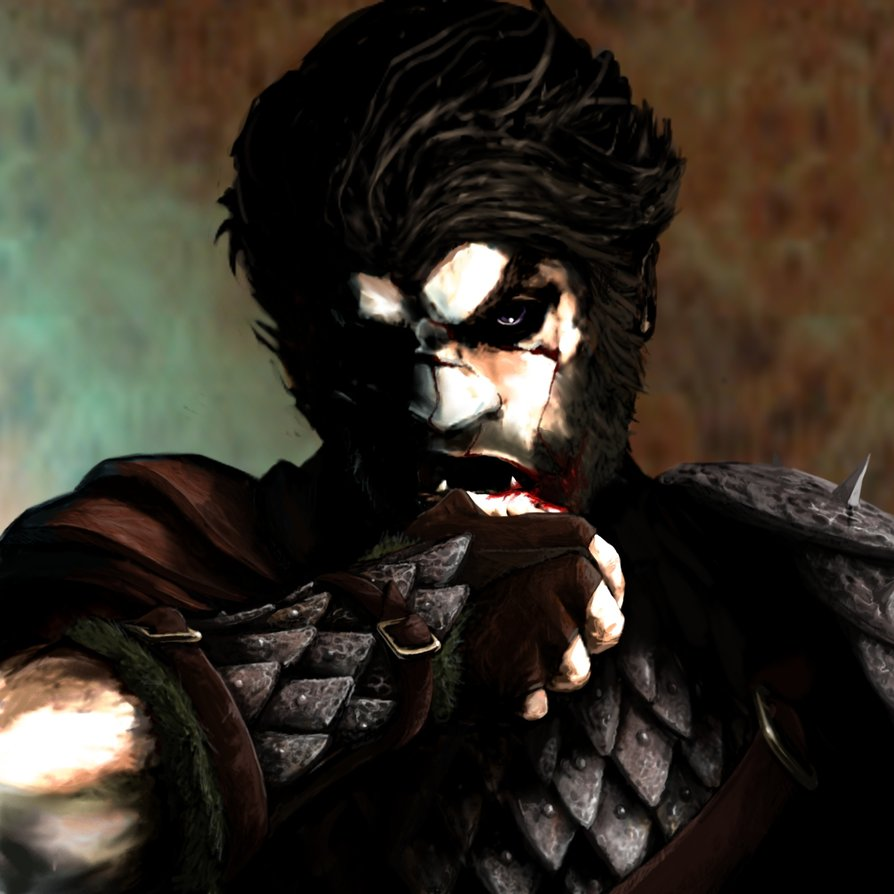

Places
People
Groups
Information not
revealed until later

Two-Teeth, named after the teeth he lost after being
kicked by a wild horse, is a half-orc barbarian who was
traveling through Brindol at the time of the race.
Spying an opportunity for profit and being accustomed
to long-distance running since childhood, he
saw it as a chance for some easy money to pay his
way across the land.
Two-Teeth is a stereotypical brute. If he thinks he
can get away with it, he would have no compunction about
tackling, beating, knocking out, or otherwise interfering
with another runner in order to get ahead.